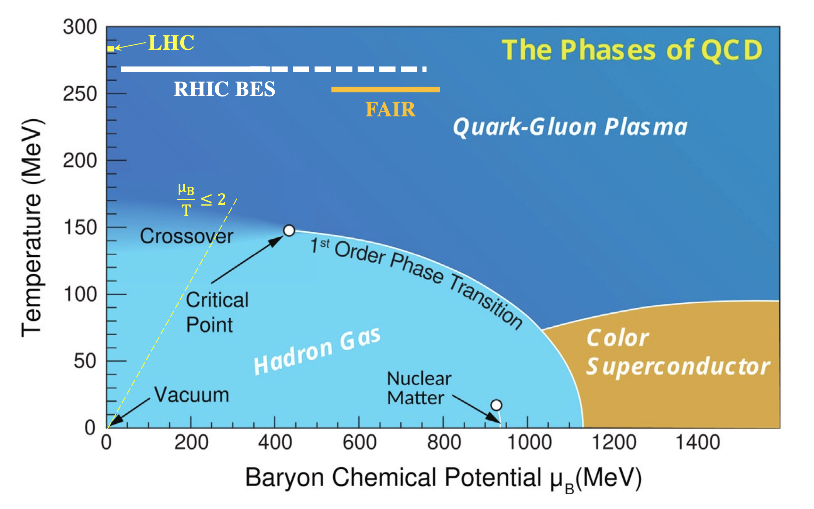
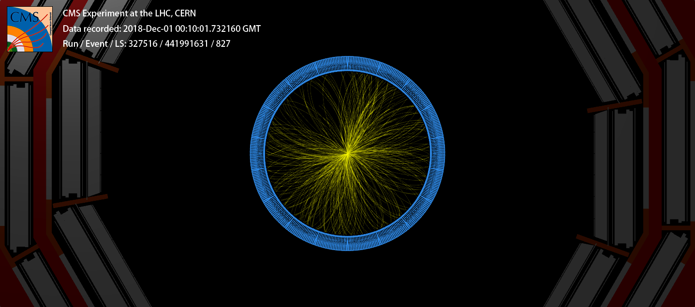
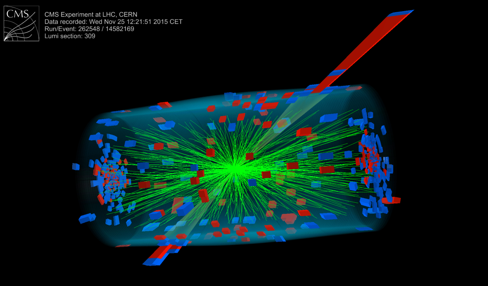

What happens when you accelerate two lead nuclei to 99.99999% the speed of light and smash them together? In the video below, I have simulated what such a lead-lead collision might look like. Each lead ion is a nucleus containing 82 protons and 126 neutrons. The total collision energy is around 1 petaelectronvolt (PeV), which is about 0.1 milliJoules. This is a little under the energy needed to press down a key on your computer's keyboard, all contained by two tiny nuclei! In the simulation, time has been slowed down by a factor for 1 billion, so one second of the video corresponds to 1 nanosecond of real time.
These heavy ion collisions can create over 10,000 particles! The lines represent the paths of electrically charged particles as they travel away from the location of the initial collision. Green lines are created by particles called pions, while purple, blue, red, and yellow lines are created by kaons, protons, muons, and electrons, respectively. You might have also noticed that the particles travel in curved lines. That is because I have added a magnetic field parallel to the incoming lead ions. When we study these collisions experimentally, we can measure the momentum of the particles as they travel through the magnetic field by measuring the curvature of the particle trajectories. Our goal is to measure each and every one of those particles produced - quite a challenging task!
Why we would want to study these collisions? It turns out that when you collide ions together at these extreme energies, something very special happens. The protons and neutrons that make up the nuclei get heated up so much that they melt into a soup of the fundamental particles - quarks and gluons - that they are composed of. This quark-gluon plasma (QGP) has a temperature of around 5 Trillion Kelvin, which is 10,000 times hotter than the center of the sun, making it the hottest substance ever created by mankind. By studying the QGP, we can learn about the properties of the strong force, one of the four fundamental forces of nature. In the figure below, you can see a phase diagram of nuclear matter interacting via the strong force, with the temperature on the vertical axis. By creating a QGP, we can explore the upper area of the diagram to learn how the strong interaction behaves at extreme energy densities. The universe is also predicted to have been a QGP about a microsecond after the Big Bang, so by studying the QGP, we can learn about the early universe. Unfortunately, the QGP is quite unstable, and only exists for about 10 yoctoseconds (\(10^{-23}\) seconds), which would correspond to around 1 millionth of 1 millinioth of 1 frame of the video above (which is already slowed down by another factor of a billion!). The QGP decays into all the particles that we study with our particle detectors. Then, using the information gathered from those particles, we make inferences about the properties of the QGP.

As it turns out, the QGP exhibits extremely complex and nontrivial behaviors that are difficult to predict directly from first principles. This is an example of 'emergence,' where a system has properties that result from the interactions of its components, but are not obvious results of the underlying theory. One of the best examples of an emergent property of the QGP is that it behaves like a perfect liquid, meaning that it has a very low viscosity, or resistance to flow. In fact, the QGP has the lowest viscosity of any known substance. One way that we determined this is by looking at the azimuthal angle particles are emitted from a collision. In the event display below, you can see that a slight excess of particles are emitted in the 1 and 7 o'clock positions. That is a hallmark effect of the QGP, and is known as elliptic flow.

Another example of an emergent phenomenon is jet quenching. When a very energetic quark or gluon passes through the QGP, it loses energy just like a bullet loses energy when it passes through water. This is illustrated in the figure below. You can see two spikes of energy (in the top right and bottom left, shown by the blue and red towers) in the CMS detector, with one of the groupings having significantly more energy than the other, as shown by the size of the towers. The smaller grouping passed through a larger portion of the QGP, and therefore lost much more energy!

There are many other unique effects observed in the quark-gluon plasma, including the enhancement of the production of particles containing strange quarks, (known as strangeness enhancement), and the temperature-dependent suppression of the production of particles containing a pair of charm and anti-charm or bottom and anti-bottom quarks, which is called sequential suppression. The QGP is a fascinating system that is still not fully understood, and I am excited to continue to study it in the future! More information about the QGP can be found here.